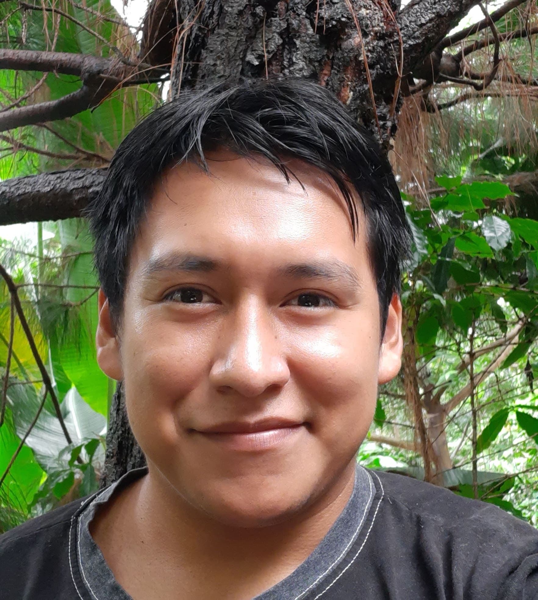

¿Quién soy?
A simple vista podrás notar que soy una persona común y corriente y de hecho, eso es lo que soy.  Algo que puedo decir que cambia dentro de mi es la forma en la que veo el mundo.
Claro, he pasado muchas etapas en mi vida y ha llegado un momento en el cual debo tomar una ruta, aunque también he aprendido que de los errores se aprende demasiado, puedo decir que he llegado al punto que me gusta cometer errores, a pesar que aun les temo, los hago con miedo porque de eso se trata la vida, recorrer el camino a pesar de los miedo.
No me veo aun en un mundo donde las personas queden paralizadas por sus miedos porque yo soy una persona, que tiene miedo, por supuesto pero sigo, a pesar de la incertidumbre de si esto funcionará, no lo se pero tengo fe, y eso me motiva a seguir adelante.
Lo mas gracioso viene después del dolor, es gracioso recordar los momentos en los cuales me decía, "ya no" pero ahora que veo el pasado, hubiera querido dar mas pero ya esta, el pasado se fue y ahora tendremos que enfocarnos en el siguiente paso.
¿Porqué he cambiado?
Para empezar, lo que la mayoría del mundo quiere, DINERO, y esque la avaricia nos corrompe a todos por dentro, entonces, hay que mejorar para ganar mas pero ahi esta el secreto, ¿en qué area mejorar para ganar mas?
En mi caso, fue en el aprendizaje de un segundo idioma (y creánme, me ayudo mucho económicamente) asi que, decido aprender Inglés y me fue bien, comparado con como me iba anteriormente.
Luego veo que tengo potencial gracias a los libros que he leido como ¨Los 7 hábitos de la gente altamente efectiva" o "Despertando el gigante que hay en tu interior" títulos muy buenos los cuales recomiendo.
También empezé gracias a un video que me enviaron de Platzi y yo todo pensativo ya que ver a Freddy hablar y decir que la tecnología iba a ser el futuro y decidí apostar. Waow!! jamás pensé que iba a tener mi propio sitio web como lo estoy haciendo ahora(es gratis pero aqui estamos).
Que raro esto cuando aprendes cosas nuevas, tienes que forzar a tu mente a que aprenda y tu sin saber que estas haciendo, y si, es importante porque podremos obtener más de lo que podemos imaginar.
Al momento de crear esta pequeña descripción, parece que estaremos trabajando en podcasts, es increible la forma en la cual podemos difundir información en forma audible para que llegue a muchas personas.
Despues de PlatziConf 2021 pasaron muchas cosas en mi mente y me dije, "yo quiero realmente estar ahí" y ahora no puedo sacarme esto de la cabeza